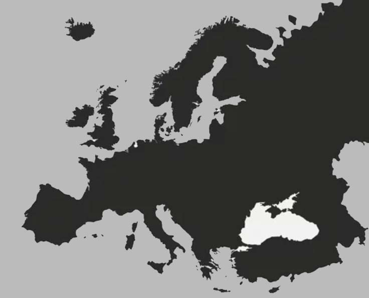

Usually, the number one reason for travellers to visit Africa is to embark on a wildlife safari or to climb Kilimanjaro. While Africa certainly does have some of the most prolific wildlife viewing opportunities and one of the seven summits, there are so many more 'other' reasons to travel to Africa. The African continent teems with unique landscapes, ancient history, geographical wonders and active adventures to boot.
Picture yourself exploring New York; not just the major sights and attractions; you’re going deep inside the city, discovering the places only locals know about, experiencing unique traditions and tasting the flavours (anyone for Ben & Jerry’s?). Now you’re in Canada’s Banff, soaking up the sensational scenery, mingling with the locals and dining on delicious Canadian cuisine. Pop over to South America’s Peru and see yourself lunching with a Peruvian family, immersed in the city’s atmosphere and delving into its colonial past.
The reasons for traveling to Europe are endless. As if its history, culture and natural beauty are not enough to draw you; the cuisine, the locals and the myriad of sights and wonders to see would be more than enough to suffice many a visitor. Europe is Earth’s second-smallest continent covering only 2% of the World’s surface and home to 11% of the Earth’s population, but within that small space is a plethora of incredible countries that have to be seen at least once in a lifetime. The continent of Europe is made up of: Fifty sovereign states; Seven non-sovereign territories and regions; Four partially recognized republics, territories and regions; and Two unrecognized republics, territories and regions.
Home to some of the world’s oldest cultures, fascinating architecture, beautiful natural landscapes, delicious foods and friendly locals; colorful Asia ticks all the right boxes for a top holiday destination. From fast-paced, exciting Bangkok and Tokyo to the sensational beaches of Koh Phi Phi or Halong Bay, adventure is everywhere you turn on an Asia tour. Each region is different; with a cuisine, culture and history all just as fascinating as the next. Join us on an unforgettable holiday in Asia and let Trafalgar bring you insider experiences and magical moments you just won’t find anywhere else.